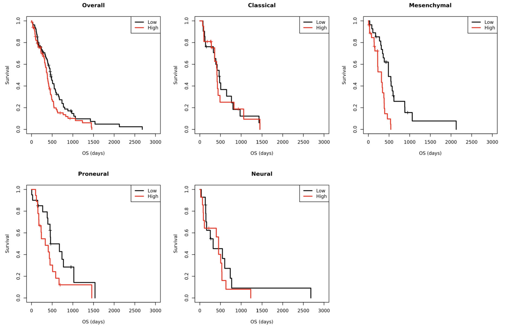
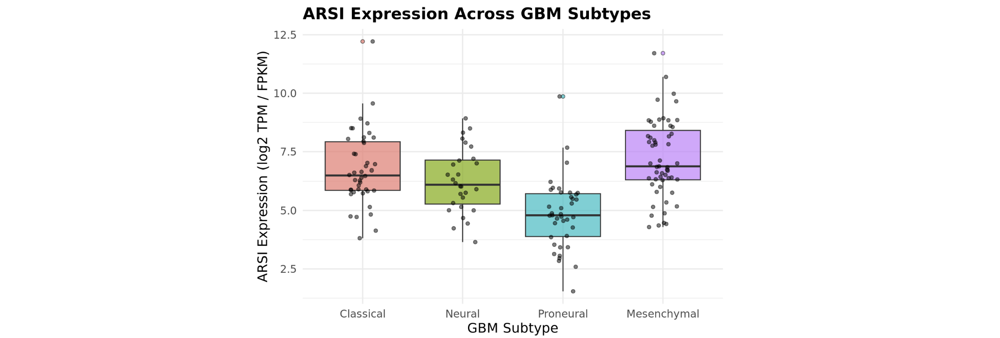
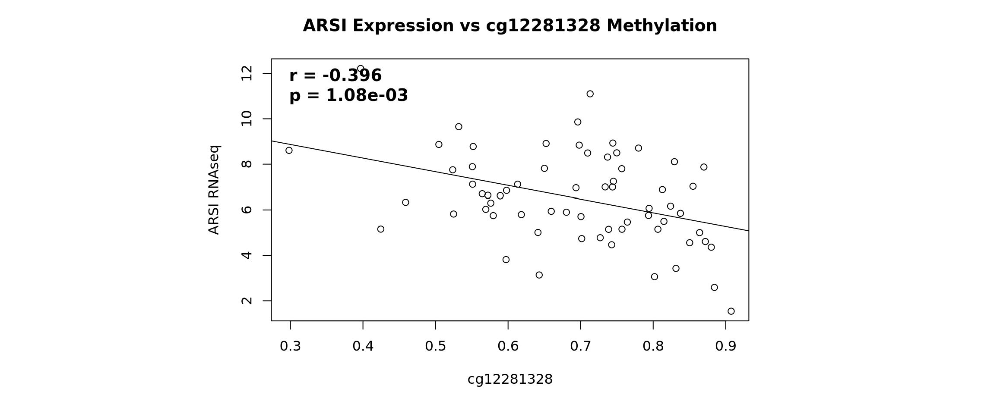
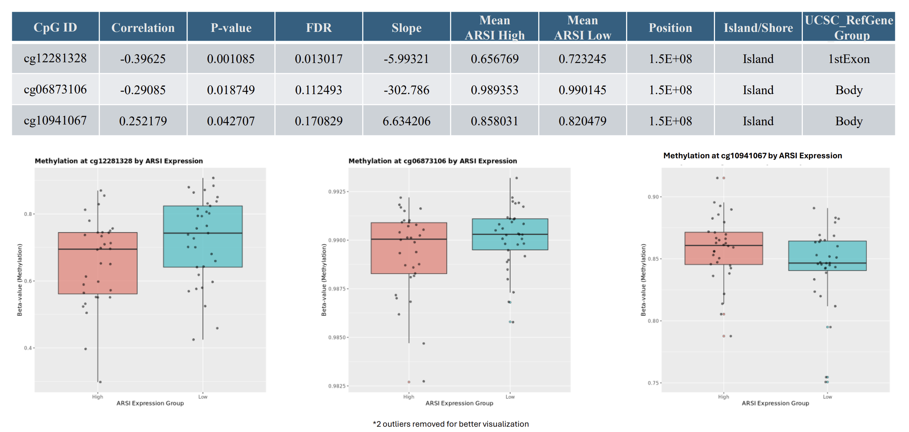
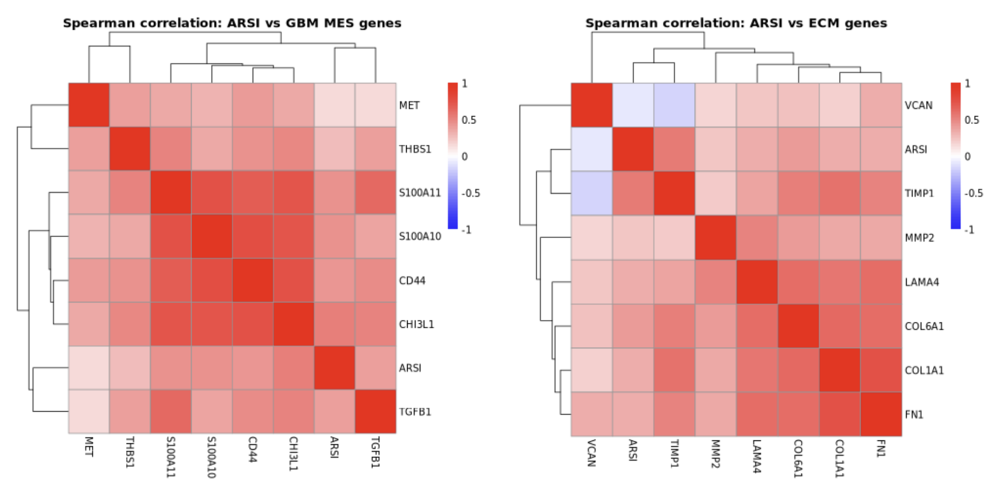
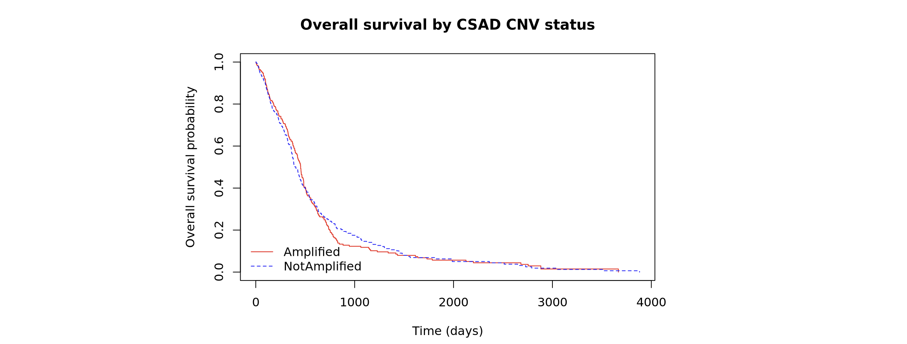

ARSI as a Candidate Biomarker in Glioblastoma
A multi-omics investigation using TCGA data
A multi-omics investigation using TCGA data to identify ARSI as a candidate biomarker in Glioblastoma.
Introduction
Glioblastoma (GBM) is the most aggressive primary brain tumour, with a 5-year survival rate of just 6.8% and an incidence of approximately 3 per 100,000. Always classified as Grade IV, GBM is fast-growing, highly infiltrative, and almost invariably recurrent. The current standard of care — surgery followed by temozolomide chemotherapy and radiotherapy — has remained largely unchanged since 2005, and even with treatment, median survival sits at around 14–16 months. Part of what makes GBM so difficult to treat is its location: the blood-brain barrier limits drug delivery, surgical margins are hard to define cleanly, and recurrent tumours are typically more resistant than the original.
Molecular profiling has revealed that GBM is not one disease but four. The Classical, Mesenchymal, Proneural, and Neural subtypes have meaningfully different biology, yet in clinical practice, patients are largely treated the same way regardless of subtype. This is the gap that biomarkers can help close. A reliable prognostic biomarker — one that predicts how a patient’s disease will progress — could enable better patient stratification, guide therapeutic targeting, and ultimately move GBM treatment toward something more personalised.
This study uses a multi-omics approach on TCGA GBM data to identify candidate prognostic biomarkers by subtype. Through a genome-wide survival screen across 20,530 genes, ARSI (Arylsulfatase I) emerged as a candidate of interest — particularly in the Mesenchymal subtype. ARSI is a protein that removes sulfate groups from extracellular matrix (ECM) molecules and has characteristically low expression in most normal tissues. Its upregulation in Mesenchymal GBM is biologically coherent: the Mesenchymal subtype is defined in part by aggressive ECM remodelling, and a protein that directly modifies ECM composition fits naturally into that biology. ARSI has also been identified as a prognostic biomarker in head and neck squamous cell carcinoma and thyroid carcinoma, lending further support to its potential relevance in GBM.
The analyses that follow draw on RNA-seq expression, DNA methylation, copy number variation, ECM gene correlation panels, and protein-level data to build a multi-omics case for ARSI as a candidate biomarker — and to honestly assess where that case holds up and where it doesn’t.
Data and Methods
All data was sourced from the TCGA Glioblastoma (GBM) cohort, accessed via the UCSC Xena platform, with the exception of the RPPA dataset which was downloaded manually from the TCPA portal. Six datasets were used across the analyses:
| Dataset | Source | Notes | Details |
|---|---|---|---|
| RNA-seq (HiSeqV2) | UCSC Xena | 172 samples | log2(TPM+1) normalised |
| Methylation (450k) | UCSC Xena | 155 samples | Beta values (0–1) |
| Curated Survival | UCSC Xena | 602 patients | OS time + event |
| Clinical / Phenotype | UCSC Xena | 629 patients | Subtype labels, age |
| CNV (GISTIC2) | UCSC Xena | 577 samples | Gene-level scores |
| RPPA | TCPA Portal | 244 samples | Protein expression |
Not all samples had data across every modality as analyses were performed on the overlapping subset available for each comparison. All analyses were performed in R on the Imperial College London HPC cluster.
The pipeline moved through six analytical stages:
- Univariate Cox regression across all 20,530 genes to screen for survival-associated genes, with Benjamini-Hochberg FDR correction for multiple testing
- Multivariate Cox regression adjusting for age at diagnosis, the only clinical variable found to be independently prognostic, repeated within each molecular subtype
- Methylation probe analysis using Pearson correlation between CpG beta values and ARSI expression across 65 overlapping samples, with probe annotation from the Illumina 450k manifest
- CNV analysis classifying samples as amplified or non-amplified by GISTIC2 score, with Kaplan-Meier survival comparison between groups
- ECM and Mesenchymal gene panel analysis using Spearman correlation matrices between ARSI and curated panels of known ECM and Mesenchymal GBM marker genes, visualised as clustered heatmaps
- RPPA analysis using limma with ARSI RNA expression as a continuous covariate to identify co-expressed genes at the protein level
Results
Survival Analysis
To identify candidate prognostic biomarkers, a genome-wide univariate Cox regression was run across all 20,530 genes in the TCGA GBM RNA-seq dataset. ARSI emerged from this screen with a hazard ratio of HR=1.169 (95% CI: 1.062–1.287, p=0.00148). This signifys that higher ARSI expression is associated with an approximately 17% increased risk of death at any given time point. While the p-value is nominally significant, the FDR-corrected value of 0.176 reflects the reality of genome-wide testing: when you run 20,530 simultaneous tests, even real signals don’t always survive correction. ARSI is best understood here as a candidate that warrants further investigation.
What made ARSI genuinely interesting was what happened when the analysis was stratified by molecular subtype. In the Mesenchymal subtype, the signal strengthened considerably: univariate HR=1.399 (95% CI: 1.174–1.666, p=0.00017) and after adjusting for age in the multivariate model (HR=1.397, p=0.00024). The near-identical hazard ratios before and after age adjustment tell an important story: this is not simply an age effect. ARSI carries independent prognostic information in Mesenchymal GBM. In the Classical, Neural, and Proneural subtypes, no meaningful association was observed.
The Kaplan-Meier curves below make this pattern visually clear. Samples were split at the median ARSI expression level into high and low groups. In the overall cohort and Mesenchymal subtype, the high-expression group shows markedly worse survival as the curves separate early and the gap is sustained. In the Proneural and Neural subtypes, the curves are nearly indistinguishable. This subtype-specificity is not just a statistical observation as it is consistent with the existing literature surrounding GBM subtypes. The Mesenchymal subtype is the most aggressive and invasive of the four, characterised by extensive extracellular matrix remodeling. That ARSI, a protein which directly modifies ECM molecules, shows its strongest prognostic signal precisely in this subtype is a coherent and biologically motivated finding.

ARSI Expression by Subtype
To contextualise the survival findings, ARSI expression was compared across the four GBM molecular subtypes. The pattern is striking and consistent with what the survival analysis suggested.

ARSI expression is highest in the Mesenchymal subtype and lowest in Proneural, with Classical and Neural sitting in between. Importantly, this is not simply a difference in median values, the entire Mesenchymal distribution shifts upward. Even the lower quartile of Mesenchymal patients shows higher ARSI expression than the median Proneural patient, indicating a population-level difference rather than a handful of outliers driving the result. A Kruskal-Wallis test confirmed that these differences are statistically significant (χ2=45.49, df=3, p=7.27E−10). The non-parametric test was chosen over ANOVA given the unequal subtype group sizes and non-normal expression distributions typical of RNA-seq data.
Taken together with the survival analysis, this result strengthens the case for ARSI as a Mesenchymal-specific signal. The survival analysis showed that high ARSI expression predicts worse outcomes — but specifically in Mesenchymal patients. The expression analysis now shows that Mesenchymal patients are also the ones with the highest ARSI expression to begin with. These two findings are independent but mutually reinforcing: ARSI is most expressed in the subtype where it is most prognostically damaging.
It is worth being clear about what this result alone cannot establish. A gene can be differentially expressed across subtypes without having any clinical relevance — subtype differences in expression are common and do not on their own constitute a biomarker. The expression analysis is meaningful here precisely because it is paired with the survival findings. Expression difference plus prognostic association is a much stronger signal than either alone.
Methylation Analysis
The survival and expression analyses established that ARSI is associated with worse outcomes in Mesenchymal GBM — but not why its expression is elevated in the first place. The methylation analysis begins to answer that question, and it contains the strongest statistical result in this study.
Twelve CpG probes mapped to the ARSI gene locus were identified from the Illumina 450k annotation and tested for correlation with ARSI RNA expression across the 65 samples with both data types available. After FDR correction, one probe survived: cg12281328 (r=−0.396, p=1.08E−3, FDR=0.013).

The negative correlation tells a coherent biological story. cg12281328 sits in the first exon of ARSI within a CpG Island, where methylation is known to have a strong silencing effect on transcription. When this site is hypomethylated, the chromatin is more accessible and transcription can proceed more freely, resulting in higher ARSI expression. When it is hypermethylated, expression is suppressed. The scatterplot makes this relationship visible where patients in the upper left driving the survival signal identified show low methylation and high ARSI RNA expression.

The boxplots stratified by ARSI expression group (high vs. low, median split) reinforce this pattern. The high-expression group shows consistently lower methylation at cg12281328 than the low-expression group. Two additional probes, cg06873106 and cg10941067, showed nominally significant correlations but did not survive FDR correction. Notably, cg10941067 showed a positive correlation with expression, which is consistent with its location in the gene body rather than the regulatory region where gene body methylation is known to behave differently and can sometimes associate with increased rather than decreased expression.
This is the only result in the study to survive multiple testing correction, and it points toward a specific epigenetic mechanism: hypomethylation at cg12281328 as a driver of ARSI upregulation in GBM. That said, the analysis was limited to 65 samples, the subset with both RNA-seq and methylation data available, which constrains statistical power and confidence. Replication in an independent cohort such as the CGGA would be an important next step.
ECM and Mesenchymal Correlation
The survival and expression results established that ARSI is prognostically relevant and most highly expressed in Mesenchymal GBM. The methylation analysis suggested a mechanism for its upregulation. What remained was to ask whether ARSI is actually embedded in the biological programmes that define the Mesenchymal subtype — or whether its association is purely statistical.
To investigate this, Spearman correlation matrices were computed between ARSI and two curated gene panels: a Mesenchymal GBM marker panel (CD44, CHI3L1, MET, TGFB1, THBS1, S100A10, S100A11) and an ECM remodelling panel (COL6A1, COL1A1, FN1, VCAN, MMP2, TIMP1, LAMA4). Spearman correlation was chosen for its robustness to outliers and non-linear relationships — both common in RNA-seq expression data.

Both heatmaps are predominantly red. ARSI shows consistent positive correlations with genes across both panels and clusters with them under hierarchical grouping — meaning ARSI co-varies with these genes across patients in a way that mirrors how the panel genes co-vary with each other. When ARSI expression is high, so too are CD44, CHI3L1, MET, FN1, and MMP2. When it is low, these genes tend to be lower as well.
This result does more than confirm a statistical association — it places ARSI within a coherent biological context. The Mesenchymal panel genes are established markers of the most aggressive and invasive GBM subtype. The ECM panel genes are directly involved in the extracellular matrix remodelling that characterises Mesenchymal tumour behaviour. ARSI, as an arylsulfatase that modifies ECM substrates, co-expressing with both of these programmes is not surprising — but seeing it empirically in patient data is what makes it credible. It suggests ARSI is not an incidental bystander but a participant in the same biological programme driving Mesenchymal GBM aggression.
Taken across all four analyses so far, a consistent picture is emerging: ARSI is most expressed in Mesenchymal GBM, most prognostically significant there, epigenetically upregulated via hypomethylation, and co-expressed with the core Mesenchymal and ECM gene programmes. Each line of evidence is independent, and they all point in the same direction.
CNV Analysis
Not every result in a multi-omics investigation points in the same direction, and that is informative in itself. The CNV analysis is the clearest example of this in the study — and arguably one of the more useful findings mechanistically.
Copy number variation refers to regions of the genome where the number of gene copies differs between individuals. In cancer, gene amplification — having more copies than the diploid baseline — can drive overexpression and is a common mechanism of oncogene activation. If ARSI upregulation in GBM were primarily driven by genomic amplification, we would expect amplified patients to show worse survival than non-amplified patients.

That is not what the data shows. Samples were classified as amplified (GISTIC2 score > 0, n = 250) or not amplified (score ≤ 0, n = 337), and the resulting Kaplan-Meier curves are nearly indistinguishable. The two groups track closely across the entire follow-up period, with no meaningful separation in survival outcomes. Copy number status alone does not appear to drive the ARSI survival signal.
This null result is worth reporting precisely because of what it rules out. Taken alongside the methylation finding, it points toward a more specific mechanistic picture: ARSI upregulation in GBM is more likely driven by epigenetic regulation — specifically hypomethylation at cg12281328 — than by genomic amplification. The expression is there, the methylation signal is there, and the CNV signal is not. That combination of findings is more informative than any single positive result alone.
RPPA Analysis
The final analysis used the RPPA dataset to identify genes whose expression co-varies with ARSI across shared samples. One important clarification upfront: ARSI is not directly measured in the TCPA RPPA panel. Rather than treating this as a dead end, ARSI RNA expression was used as a continuous covariate in a limma linear model applied to the RNA-seq data across the 172 samples shared between datasets. The question being asked was not “what is ARSI protein expression?” but rather “what other genes are most tightly co-expressed with ARSI across this cohort?”
limma was chosen for its moderated t-statistic approach via eBayes() — by borrowing variance information across all genes rather than estimating it gene-by-gene, it produces more reliable results in the relatively small sample sizes typical of TCGA cohorts.
[RPPA results table]
The top hit is ARSI itself (t=584.89, adj.p=1.64×10−134, logFC=1) — which is expected and serves as a sanity check that the model is working correctly. The biologically interesting findings are the genes immediately below it. TIMP1, ANXA2, and ANXA2P2 emerge as the strongest co-expressed genes. TIMP1 is particularly noteworthy — it appeared independently in the ECM gene panel analysis earlier in this study, and its reappearance here as a top hit in a completely separate analysis is convergent evidence pointing to the same biological signal. ANXA2 and its pseudogene ANXA2P2 are involved in ECM interactions and have been implicated in tumour invasion — consistent with the Mesenchymal biology this study has been building toward.
The convergence across analyses is worth stepping back to appreciate. TIMP1 emerged from curated literature-based gene panels and from an unbiased co-expression screen. That two independent analytical approaches identify the same gene alongside ARSI strengthens the case that these associations are not statistical noise but reflect real co-regulatory biology.
Conclusion and Limitations
This study set out to identify a candidate prognostic biomarker for Glioblastoma using a multi-omics approach on TCGA data. Across six independent analyses, a consistent picture emerged: ARSI is most highly expressed in Mesenchymal GBM, associates with worse survival in that subtype, appears to be epigenetically upregulated via hypomethylation at cg12281328, and co-expresses with the core ECM and Mesenchymal gene programmes that define the most aggressive GBM subtype.
The mechanistic chain is coherent: lower methylation drives higher ARSI expression, higher expression associates with worse survival, and ARSI co-varies with the ECM remodelling genes that characterise Mesenchymal tumour behaviour. If validated, this could contribute to more accurate subtype-specific prognosis and potentially inform therapeutic targeting of the ECM pathways ARSI participates in.
That said, the limitations of this study are real and worth stating clearly.
- Statistical significance: ARSI does not survive FDR correction in the survival analyses. It is a candidate biomarker supported by consistent trends across multiple data types — not a confirmed hit. The high FDR is an honest reflection of the multiple testing burden of genome-wide screening.
- Sample size: The TCGA GBM cohort is small by genomic standards. The methylation analysis was limited to 65 overlapping samples, and subtype-stratified analyses were smaller still. This constrains statistical power throughout.
- Observational design: Everything here is correlational. Showing that ARSI associates with survival and co-expresses with ECM genes does not establish causality. Functional wet-lab studies — CRISPR knockdown, overexpression experiments — would be needed to determine whether ARSI actively contributes to Mesenchymal GBM aggression or is simply a passenger in that biological programme.
- Single cohort: All data comes from TCGA. External validation in an independent cohort such as the CGGA is an essential next step before drawing stronger conclusions.
The most important future directions are external validation, functional studies, and true multi-omics integration — combining methylation, CNV, and expression data into a unified model rather than analysing each modality separately. GBM remains one of the hardest cancers to treat, and progress will come from exactly this kind of systematic, multi-layered investigation — even when the results are exploratory rather than definitive.